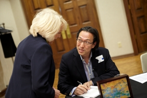
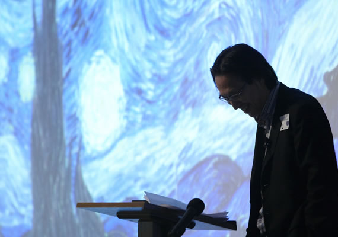

Makoto Fujimara
Makoto Fujimura was born in 1960 in Boston, Massachusetts. Educated bi-culturally between the US and Japan, Fujimura graduated from Bucknell University in 1983, and received an M.F.A. from Tokyo National University of Fine Arts and Music with a Japanese Governmental Scholarship in 1989. His thesis painting was purchased by the university and he was invited to study in the Japanese Painting Doctorate program, a first for an outsider to this prestigious traditional program.
 It was during the six and a half years of studying in Japan that Fujimura began to assimilate the combinations of abstract expressionism explored in the US with the traditional Japanese art of Nihonga. Fujimura’s new book River Grace (www.rivergrace.com) , traces his journey of mastering Nihonga technique using carefully stone-ground minerals including azurite, malachite and cinnabar, and his deep wrestling with art and faith issues. Upon his return to the US, he began to exhibit his paintings in New York City, while continuing to show in Tokyo, and was honored in 1992 as the youngest artist ever to have had a piece acquired by Museum of Contemporary Art, Tokyo.
After 20 years as a successful artist in Japan and the U.S., Fujimura has become a voice of bi-cultural authority on the nature and cultural assessment of beauty, by both creating it and exploring its forms. His paintings address the creative process and explore what it means to see. The work moves the observer from cognitive categorization to visceral experience.
In 1990, Mr. Fujimura founded The International Arts Movement. IAM hosts a major conference in New York City every February, attracting notable speakers and performers such as Dana Gioia (poet, Chair of NEA), Patricia Heaton (actor), Rob Mathes Band, Miroslav Volf (theologian, Yale University), Elaine Scarry (author, Harvard University) and Daniel Libeskind (architect).
As an artist working from his studio near Ground Zero until the 9/11 terrorist attacks in New York City, Fujimura was deeply affected by the tragic events of that day. But his art continues to speak of hope even in darkness, and the deeper reconsideration of life's meaning. As an artist who travels widely, Fujimura recognizes the momentous changes the world is experiencing since those events, and the role of art in enabling people to reflect deeply, explore their feelings and become more profoundly aware. Some have experienced change for the better due to this awareness. In this regard he notes, "my work constitutes one of many voices calling for change, and I am increasingly hopeful as I observe evidence that we are all in a larger process of re-examining ourselves."

His essay, The Fallen Towers and the Art of Tea, in soon to be released collection of essays called “Refractions”, can be accessed via this link. His post 9/11 curatorial efforts, to create an "oasis of collaboration by local 'ground zero' artists in hope of planting a seed of restoration for the downtown community,' can be examined via www.tribecatemporary.com.
Critic David Gelertner wrote in A Faithful Art: Makoto Fujimura and the redemption of abstract expressionism : "Makoto Fujimura's paintings are a joyful gusher from a well that had long run dry...(he is a) superb artist who does honor to the Japanese traditions he uses, and helps fan life back into several magnificent western traditions--traditions as new as abstract expressionism, as old as Christian art."
His works are represented by Dillon Gallery in New York as well as Tokyo (www.dillongallery.com). Public collections include The Saint Louis Museum, Museum of Contemporary Art in Tokyo and the Time Warner/ AOL/ CNN building in Hong Kong. He was appointed to the National Council on the Arts, a six year Presidential appointment, in 2003.
Noted artist and critic Robert Kushner wrote, "The idea of forging a new kind of art, about hope, healing, redemption, refuge, while maintaining visual sophistication and intellectual integrity is a growing movement, one which finds Fujimura's work at the vanguard."